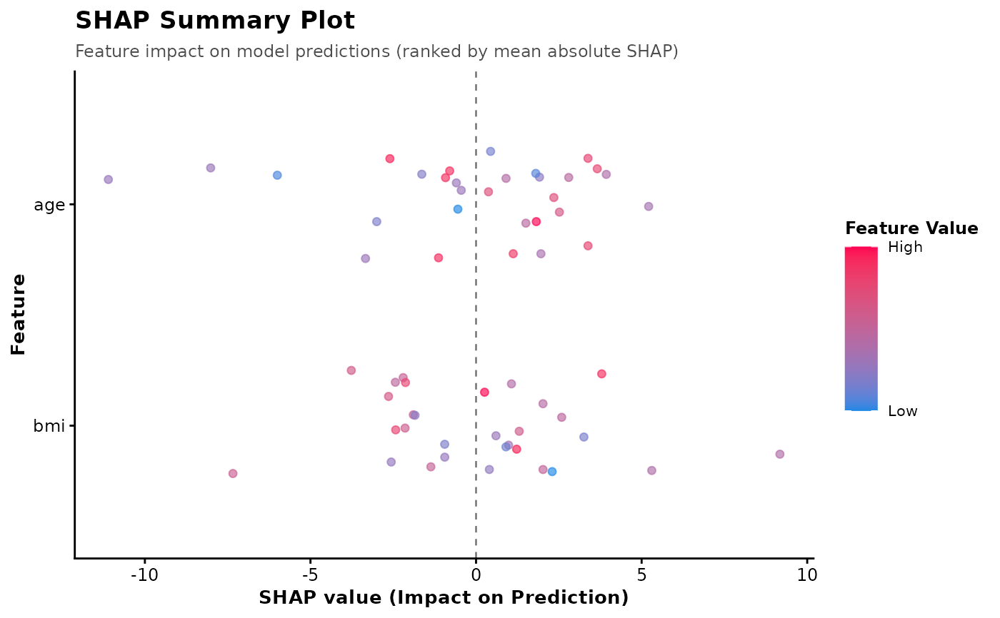

Plot SHapley Additive exPlanations (SHAP) Summary
Source:R/plot_shap_summary.R
plot_shap_summary.RdExperimental. Generates a SHAP summary plot (similar to the Python 'shap' package) where features are ranked on the y-axis by their overall importance (mean absolute SHAP value), SHAP values are shown on the x-axis, and each point (representing a respondent) is colored by its relative value for that feature (blue for low, red for high).
Usage
plot_shap_summary(
shap_matrix,
data,
low_color = "#1e88e5",
high_color = "#ff0052",
title = "SHAP Summary Plot",
subtitle = "Feature impact on model predictions (ranked by mean absolute SHAP)"
)Arguments
- shap_matrix
The matrix output from
survey_shap().- data
The matrix or data frame of training features (e.g. the
Xmatrix returned bysurvey_xgboost()) or the original data frame. If the row count does not match the SHAP matrix, rows with missing values will be automatically filtered out.- low_color
A character string for the color representing low feature values. Default is
"#1e88e5"(standard SHAP blue).- high_color
A character string for the color representing high feature values. Default is
"#ff0052"(standard SHAP red).- title
A character string for the plot title. Default is
"SHAP Summary Plot".- subtitle
A character string for the plot subtitle. Default is
"Feature impact on model predictions (ranked by mean absolute SHAP)".
Examples
# \donttest{
if (requireNamespace("xgboost", quietly = TRUE)) {
set.seed(1)
n <- 30
df <- data.frame(
outcome = rnorm(n, 100, 10),
age = round(runif(n, 18, 80)),
bmi = round(rnorm(n, 24, 4), 1),
wt = round(runif(n, 0.5, 2), 2)
)
design <- survey::svydesign(ids = ~1, weights = ~wt, data = df)
model <- survey_xgboost(design, outcome ~ age + bmi, nrounds = 5)
shap <- survey_shap(model)
plot_shap_summary(shap, model$X)
}

# }